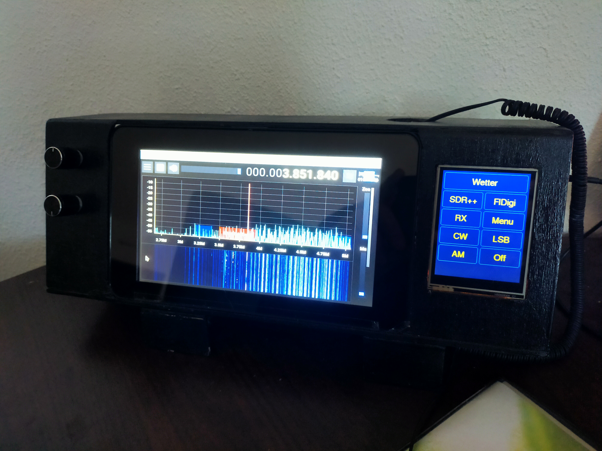

SDR Receiver
I build my own SDR-Receiver based on a RaspberryPi 4 with 7"-Display, RTL-SDR V3 Stick, SecondDisplay with ESP 8266 and two Rotary Encoders for volume and frequency selection. The SDR Software is SDRPlusPlus with a selfmade plugin "Logbook" to log stations I heard.
Find it here on GitHub.
